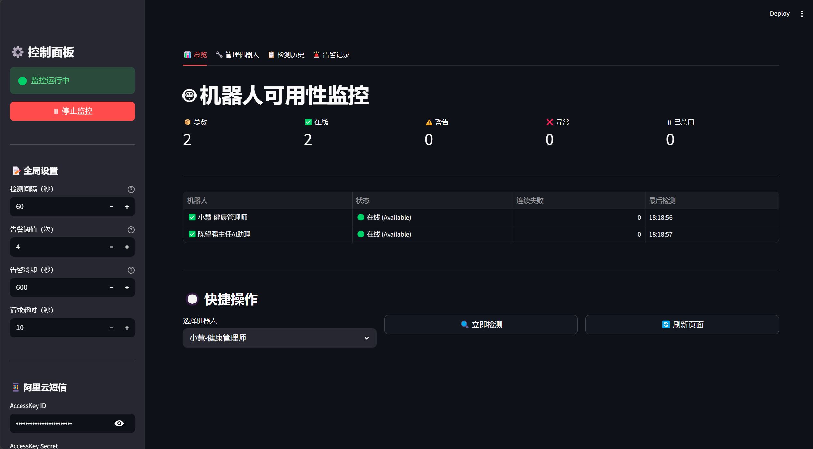
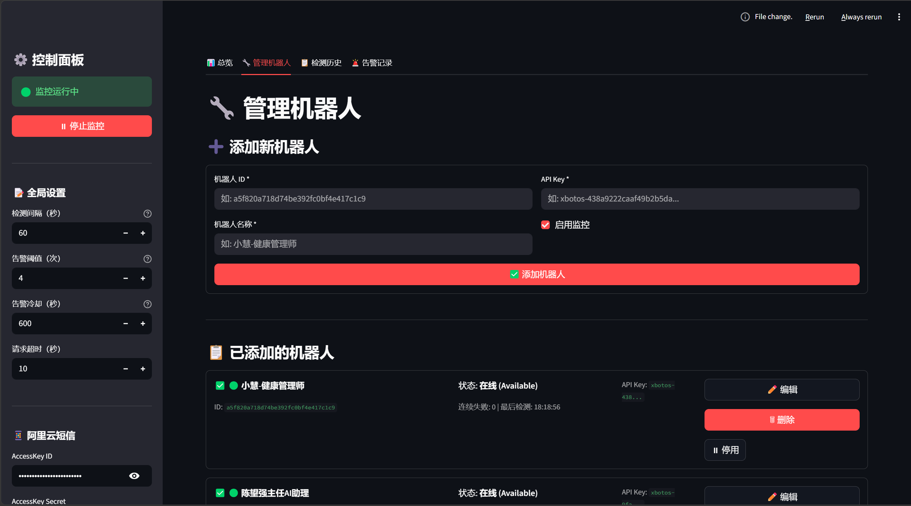
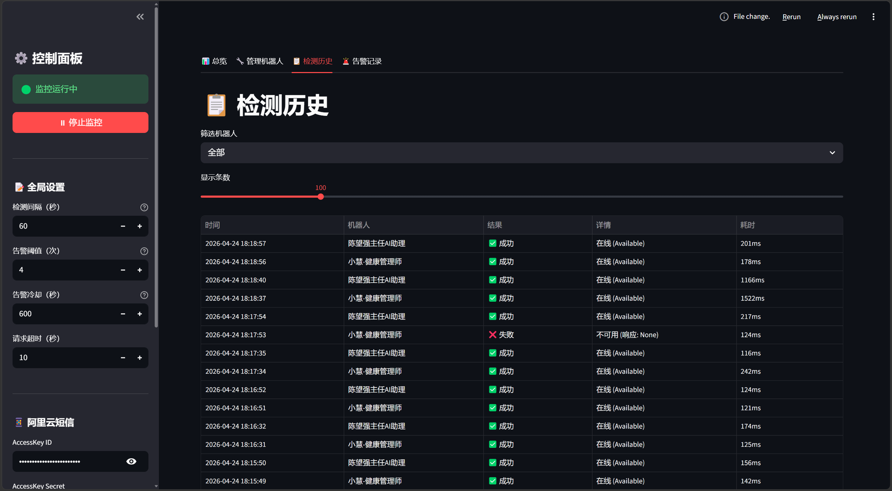

背景与问题
多机器人服务靠人盯，漏检代价高；但「抖一下就短信」会迅速造成告警疲劳——没人理的告警等于没有告警。真正要交付的是可信的异常信号，而不只是又一个状态页。
产品命题
少误报、早发现：监控要服务值班，而不是制造噪音。
交付标准
面板可读、策略可调、Docker 可部署。
三个关键判断
01 · 策略
连续失败 + 冷却
连续 N 次失败才通知，并设置冷却，先解决「敢信」再谈「发得出」。
02 · 体验
一眼可读的分层面板
总览看健康，管理改对象，历史可回溯——值班时不靠翻日志碰运气。
03 · 部署
足够轻才能真上线
Streamlit + Docker Compose，方便挂进现有 1Panel 环境，降低运维接入成本。
我怎么做
- 监控引擎：定时探测在线状态，自动刷新总览。
- 告警通道：阿里云短信与 SMTP 邮件可单开或同开；策略层统一控频。
- 管理与历史：集中维护机器人对象，保留每次探测记录便于复盘。
- 交付形态：容器化部署，配置与数据可持久化。
结果
- 形成可开源运行的监控服务（总览 / 管理 / 历史 / 告警）
- 告警从「有通知」升级为「有策略的通知」——降低抖动误报
- 可部署到 Docker / 1Panel，适合作为交付配套工具
证据



技术栈
- Python · Streamlit · 阿里云短信 / SMTP · Docker Compose · 本地 JSON 持久化
开源仓库：xbotos-monitor。本页强调告警策略判断；环境变量与部署命令见仓库。